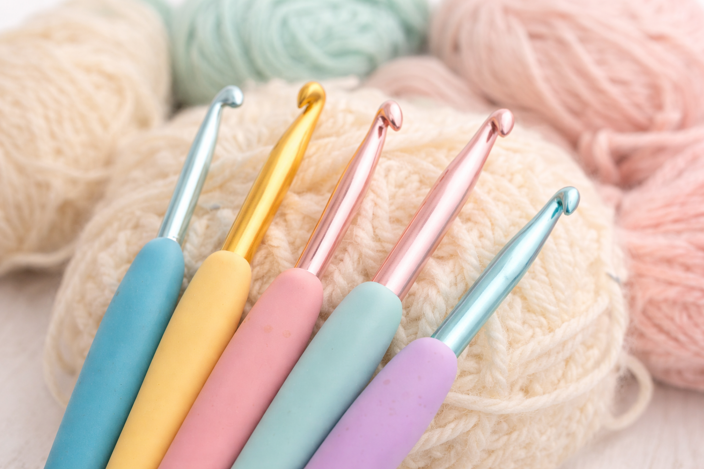

Crochet Hooks
Crochet hooks are one of the most important tools in crochet. They are used to pull yarn through loops and create stitches, turning simple strands of yarn into blankets, clothing, accessories, and more. Crochet hooks come in different sizes, materials, and styles, and each one can affect how your project feels and turns out. Learning the basics of crochet hooks will help beginners choose the right tool and feel more confident when starting a new project.

Learning crochet hook sizes is important because the size of your hook directly affects how your stitches look and how your finished project turns out. Using a hook that is too small can make your stitches tight and difficult to work with, while a hook that is too large can create loose, uneven stitches. The correct hook size helps your project match the intended size, shape, and texture, especially when following a pattern. Understanding hook sizes also makes it easier to choose the right tool for different yarns, helping beginners avoid frustration and create more consistent, professional-looking results. Below is a table of common crochet hook sizes and their uses to help you get started!
| US Size | Metric (mm) | Common Use |
|---|---|---|
| B-1 | 2.25 mm | Lace / fine yarn |
| C-2 | 2.75 mm | Light projects |
| G-6 | 4.00 mm | Beginner projects |
| H-8 | 5.00 mm | Most common size |
| J-10 | 6.00 mm | Chunky yarn |
| K-10.5 | 6.50 mm | Thick projects |